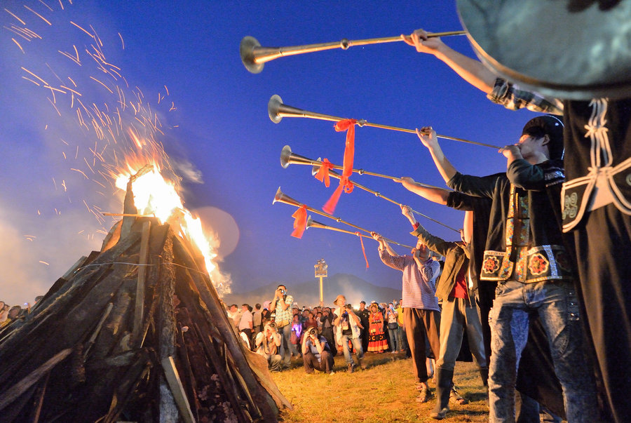

- 中秋节风俗习惯
- 中秋节地方特色
- 中秋节民族特色
- 中秋宴俗
传统活动——祭月、赏月、拜月
礼记》早有记载“秋暮夕月”，意为拜祭月神，逢此时则要举行迎寒和祭月，设香案。到了周代，每逢中秋夜都要举行迎寒和祭月。设大香案，摆上月饼、西瓜、苹果、红枣、李子、葡萄等祭品，其中月饼和西瓜是绝对不能少的，西瓜还要切成莲花状。在月下，将月亮神像放在月亮的那个方向，红烛高燃，全家人依次拜祭月亮，然后由当家主妇切开团圆月饼。切的人预先算好全家共有多少人，在家的，在外地的，都要算在一起，不能切多也不能切少，大小要一样。在少数民族中，同样盛行祭月的风习。 相传古代齐国丑女无盐，幼年时曾虔诚拜月，长大后，以超群品德入宫，但未被宠幸。某年八月十五赏月，天子在月光下见到她，觉得她美丽出众，后立她为皇后，中秋拜月由此而来。月中嫦娥，以美貌著称，故少女拜月，愿“貌似嫦娥，面如皓月”。而云南傣族在中秋之夜，同样盛行“拜月”风俗。 中秋赏月的风俗在唐代十分流行，许多诗人的名篇中都有咏月的诗句。到宋代，中秋赏月之风更盛，每逢这一日，“贵家结饰台榭，民间争占酒楼玩月”。明清宫廷和民间的拜月赏月活动更具规模，中国各地至今遗存着许多“拜月坛”、“拜月亭”、“望月楼”等古迹。文人士大夫对赏月更是情有独钟，他们或登楼揽月或泛舟邀月，饮酒赋诗，留下不少脍炙人口的千古绝唱。如杜甫《八月十五夜月》用象征团圆的十五明月反衬自己飘泊异乡的羁旅愁思;宋代文豪苏轼，中秋欢饮达旦，大醉而作《水调歌头》，借月之圆缺喻人之离合。直到今天，一家人围坐在一起，欣赏皓月当空的美景仍是中秋佳节必不可少的活动之一。
观潮
在古代，浙江一带除中秋赏月外，观潮可谓是又一中秋盛事。中秋观潮的风俗由来已久，早在汉代枚乘的《七发》赋中就有了相当详尽的记述。汉以后，中秋观潮之风更盛。明朱廷焕《增补武林旧事》和宋吴自牧《梦粱录》也有观潮记载。燃灯
中秋之夜，有燃灯以助月色的风俗。如今湖广一带仍有用瓦片叠塔于塔上燃灯的节俗。江南一带则有制灯船的节俗。近代中秋燃灯之俗更盛。今人周云锦、何湘妃《闲情试说时节事》一文说：“广东张灯最盛，各家于节前十几天，就用竹条扎灯笼。做果品、鸟兽、鱼虫形及‘庆贺中秋’等字样，上糊色纸绘各种颜色。中秋夜灯内燃烛用绳系于竹竿上，高竖于瓦檐或露台上，或用小灯砌成字形或种种形状，挂于家屋高处，俗称‘树中秋’或‘竖中秋’。富贵之家所悬之灯，高可数丈，家人聚于灯下欢饮为乐，平常百姓则竖一旗杆，灯笼两个，也自取其乐。满城灯火不啻琉璃世界。”看来从古至今中秋燃灯之俗其规模似乎仅次于元宵灯节。玩花灯
中秋没有像元宵节那样的大型灯会，玩灯主要只是在家庭、儿童之间进行的。早在北宋《武林旧事》中，记载中秋夜节俗，就有‘将“一点红”灯放入江中漂流玩耍的活动。中秋玩花灯，多集中在南方。如佛山秋色会上，就有各种各式的彩灯：芝麻灯、蛋壳灯、刨花灯、稻草灯、鱼鳞灯、谷壳灯、瓜籽灯及鸟兽花树灯等。 在广州、香港等地，中秋夜要进行树中秋活动，树亦作竖，即将灯彩高竖起来之意。小孩子们在家长协助下用竹纸扎成兔仔灯、杨桃灯或正方形的灯，横挂在短竿中，再竖起于高杆上，高技起来，彩光闪耀，为中秋再添一景。孩子们多互相比赛，看谁竖得高，竖得多，灯彩最精巧。另外还有放天灯的，即孔明灯，用纸扎成大形的灯，灯下燃烛，热气上腾，使灯飞扬在空中，引人欢笑追逐。另外还有儿童手提的各式花灯在月下游嬉玩赏。 在广西南宁一带，除了以纸竹扎各式花灯让儿童玩耍外，还有很朴素的柚子灯、南瓜灯、桔子灯。所谓柚子灯，是将柚子掏空，刻出简单图案，穿上绳子，内点蜡烛即成，光芒淡雅。南瓜灯、桔子灯也是将瓤掏去而成。虽然朴素，但制作简易，很受欢迎，有些孩子还把柚子灯漂入池河水中作游戏。 广西有简单的户秋灯，是以六个竹篾圆圈扎成灯，外糊白纱纸，内插蜡烛即成。挂于祭月桌旁祭月用，也可给孩子们玩烧塔
南方广泛流传着烧瓦子灯(或称烧花塔、烧瓦塔、烧番塔)的游戏。如《中华全国风俗志》卷五记：江西“中秋夜，一般孩子于野外拾瓦片，堆成一圆塔形，有多孔。黄昏时于明月下置木柴塔中烧之。俟瓦片烧红，再泼以煤油，火上加油，霎时四野火红，照耀如昼。直至夜深，无人观看，始行泼息，是名烧瓦子灯”。广东潮州的烧瓦塔，也是以砖瓦砌成空心塔，填入树枝烧起火来。同时还燃烟堆，就是将草柴堆成堆，在拜月结束后烧燃。而在广西边疆一带的烧番塔，亦类似这种活动，但民间传说是为了纪念清代抗法名将刘永福将逃入塔中的番鬼(法国侵略者)烧死的英勇战斗。福建晋江亦有“烧塔仔”的活动。 传说这种习俗与反抗元兵的义举有关。元朝确立后，对汉人进行了血腥的统治，于是汉人便进行不屈的反抗，各地相约中秋节起事，在宝塔的顶层点火为号。类似于峰火台点火起事，这种反抗虽被镇压下去，却遗存了烧宝塔这一习俗。
南方
广东潮汕各地有中秋拜月的习俗，主要是妇女和小孩，有“男不圆月，女不祭灶”的俗谚。当地还有中秋吃芋头的习惯，潮汕有俗谚：“河溪对嘴，芋仔食到”。八月间，正是芋的收成时节，农民都习惯以芋头来祭拜祖先。这固然与农事有关，但民间还有一则流传广泛的传说：1279年，蒙古贵族灭了南宋，建立元朝，对汉人进行了残酷的统治。马发据守潮州抗元，城破后，百姓惨遭屠杀。为了不忘胡人统治之苦，后人就取芋头与“胡头”谐音，且形似人头，以此来祭奠祖先，历代相传，至今犹存。中秋夜烧塔在一些地方也很盛行。 江南一带的民间在中秋节人习俗也是多种多样。南京人中秋爱吃月饼外，必吃舞火龙金陵名菜桂花鸭。“桂花鸭”于桂子飘香之时应市，肥而不腻，味美可口。酒后必食一小糖芋头，浇以桂浆，美不待言。“桂浆”，取名自屈原《楚辞·少司命》“援北方闭兮酌桂浆”。桂浆，一名糖桂花，中秋前后采摘，用糖及酸梅腌制而成。江南妇女手巧，把诗中的咏物，变为桌上佳肴。南京人合家赏月称“庆团圆”，团坐聚饮叫“圆月”，出游街市称“走月”。 明初南京有望月楼、玩月桥，清代狮子山下筑朝月楼，皆供人赏月，而以游玩月桥者为最。人们在明月高悬时，结伴同登望月楼、游玩月桥，以共睹玉兔为乐。“玩月桥”在夫子庙秦淮河南，桥旁为名妓马湘兰宅第，这夜，士子聚集桥头笙箫弹唱，追忆牛渚玩月，对月赋诗，故称此桥为玩月桥。明亡后，渐渐衰落，后人有诗去：“风流南曲已烟销，剩得西风长板桥，却忆玉人桥上坐，月明相对教吹箫”。长板桥，即原先的玩月桥。近年来，南京夫子庙已重新修葺，恢复明清年间的一些亭阁，疏浚河道，待到中秋佳节时，就可结伴同来领略此地的玩月佳趣了。 江苏省无锡县中秋夜要烧斗香。香斗文章来源于佳酿网四周糊有纱绢，绘有月宫中的景色。也有香斗以线香编成，上面插有纸扎的魁星及彩色旌旗。上海人中秋宴以桂花蜜酒佐食。 江西省吉安县在中秋节的傍晚，每个村都用稻草烧瓦罐。待瓦罐烧红后，再放醋进去。这时就会有香味飘满全村。新城县过中秋时，自八月十一夜起就悬挂通草灯，直至八月十七日止。婺源中秋节，儿童以砖瓦堆一中空宝塔。塔上挂以帐幔匾额等装饰品，又置一桌于塔前，陈设各种敬“塔神”的器具。夜间则内外都点上灯烛。绩溪中秋儿童打中秋炮。中秋炮是以稻草扎成发辫状，浸湿后再拿起来向石上打击，使发出巨响并有游火龙的风俗。火龙是以称草扎成的龙，身上插有香柱。游火龙时有锣鼓队同行，游遍各村后再送至河中。 四川省人过中秋除了吃月饼外，还要打粑、杀鸭子、吃麻饼、蜜饼等。有的地方也点桔灯，悬于门口，以示庆祝。也有儿童在柚子上插满香，沿街舞动，叫做“舞流星香球”。嘉定县中秋节祭土地神、扮演杂剧、声乐、文物，称为“看会”。北方
山东省庆云县农家在八月十五祭土谷神，称为“青苗社”。诸城、临沂和即墨等地除了祭月外，也得上坟祭祖。冠县、莱阳、广饶及邮城等地的地主也在中秋节宴请佃户。即墨中秋节吃一种应节食品叫“麦箭”。山西省潞安则在中秋节宴请女婿。大同县则把月饼称为团圆饼，在中秋夜有守夜之俗。 河北省万全县称中秋为“小元旦”，月光纸上绘有太阴星君及关帝夜阅春秋像。河间县人认为中秋雨为苦雨，若中秋节下雨，当地人则认为青菜必定味道不佳。 陕西省西乡县中秋夜男子泛舟登崖，女子安排佳宴。不论贫富，必食西瓜。中秋有吹鼓手沿门吹鼓，讨赏钱。洛川县中秋节家长率学生带礼物为先生拜节，午饭多于校内聚餐。 一些地方还形成了很多特殊的中秋习俗。除了赏月、祭月、吃月饼外，还有香港的舞火龙、安徽的堆宝塔、广州的树中秋、晋江的烧塔仔、苏州石湖看串月、傣族的拜月、苗族的跳月、侗族的偷月亮菜、高山族的托球舞等。
蒙古族
蒙古族人爱做“追月”的游戏。人们跨上骏马，在银白色月光下，奔驰在草原上。他们朝西放马奔驰，月亮由东方升起，坠落西方。执着的蒙古骑手，不到月亮西下，“追月”不止。藏族
西藏一些地区的藏族同胞欢度中秋的习俗是“寻月”。是日夜晚，男女青年和娃娃们，沿着河流，跟着倒映水中的明月，把周围河塘中的月影措遍，然后回家团圆吃月饼。
广西侗族
广西侗族有“行月”的习俗。中秋夜临，各山寨的芦笙歌舞队，踏着一路月光，行至临近山寨，和那儿的寨民相聚赏月，赛歌赛舞，彻夜长欢。云南德昂族
云南德昂族“串月”。云南潞西的德昂族青年男女，每逢中秋月明高挂，分外明亮的时候，山头塞尾，不时传来一阵悠扬动听的葫芦笙，男女青年在一起“串月亮”倾诉衷情。有的还通过“串月亮”送槟榔、送茶订下婚约。云南彝族
云南彝族过中秋的传统习俗是“跳月”。入夜，该族各个村寨的男女老幼都聚集在山村中的开阔地，一个个束腰披纱的姑娘们和头缠布带的小伙子们以及老头、老太太、小娃子们都激情地载歌载舞，尤其是那些青年男女表达爱慕之情的对歌，仿佛月亮也听得为之动情动容，越发显得妩媚皎洁。
仡佬族
仡佬族在节前的“虎日”，全寨合宰一头公牛，将牛心留到中秋夜祭祖灵、迎新谷，他们称为“八月节”。
古时中国的中秋宴俗，以宫廷最为精雅。如明代宫廷时兴吃螃蟹。螃蟹用蒲包蒸熟后，众人围坐品尝，佐以酒醋。食毕饮苏叶汤，并用之洗手。宴桌区周，摆满鲜花、大石榴以及其他时鲜，演出中秋的神话戏曲。清宫多在某一院内向东放一架屏风，屏风两侧搁置鸡冠花、毛豆技、芋头、花生、萝卜、鲜藕。屏风前设一张八仙桌，上置一个特大的月饼，四周缀满糕点和瓜果。祭月完毕，按皇家人口将月饼切作若干块，每人象征性地尝一口，名曰“吃团圆饼”。清宫月饼之大，令人难以想象。像末代皇帝溥仪赏给总管内务大臣绍英的一个月饼，便是“径约二尺许，重约二十斤”。